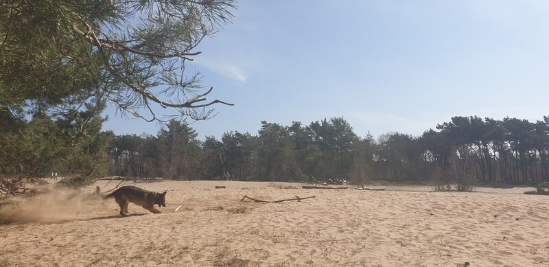

Rosmalen
Toeristische attracties
OJC Rosmalen, dit is de voetbalclub uit Rosmalen. Vele jonge sporters beginnen hier hun voetbal carriere en slechts weinige zullen echt de top bereiken. Maar het is een club van hier en iedereen komt hier gezellig bij elkaar. Om voetbal te kijken, lekker te kletsen of gezellig een biertje te drinken. Je raad het al de plek voor gezelligheid.
Als u niet zo van het voetbal en de drukte houdt, heeft Rosmalen ook voor u nog iets in petto. De zandverstuiving, dit prachtige natuurgebied is ideaal om te wandelen of lekker te fietsen op de mountenbike. Ook kunt hier hardlopen of gezellig picknicken met de familie. De ideale plaats om lekker te ontspannen.